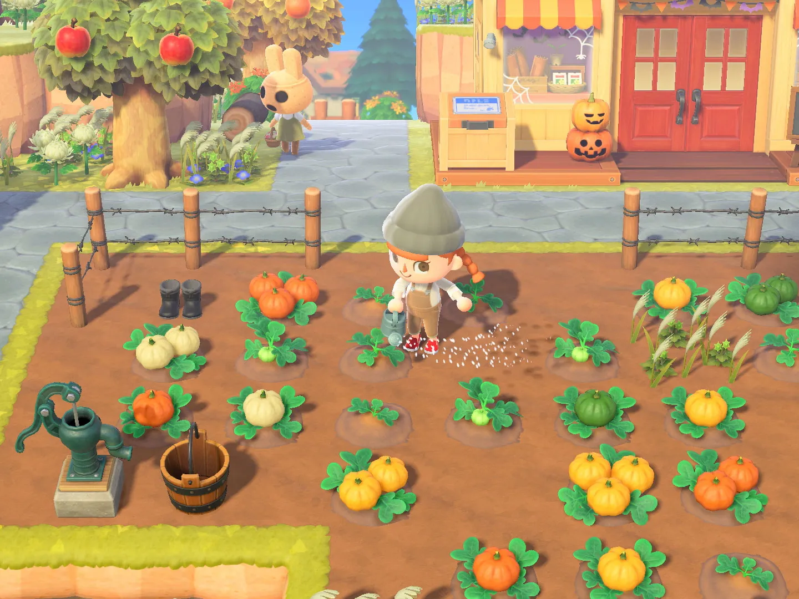

Animal Crossing
Bienvenidos a la perfecta página que os ayudará a entender en que consiste este maravilloso juego.
¿De que trata el juego?
Animal Crossing se trata de un juego es una serie de videojuegos de simulación de vida publicada por Nintendo y creada por Katsuya Eguchi y Hisashi Nogami, en la que el jugador vive en un pueblo habitado por animales antropomórficos, llevando a cabo diversas actividades. La serie destaca por su sistema de juego abierto y su amplio uso del reloj y el calendario interno en el sistema para simular el paso real del tiempo, es decir, que el juego se desarrolla en tiempo real. En total son siete juegos, siendo publicado el primero en 2001, aunque tres de ellos solo en Japón. Hay entregas para Nintendo Gamecube, Nintendo DS, Wii, Nintendo 3DS y Nintendo Switch.
Jugabilidad
